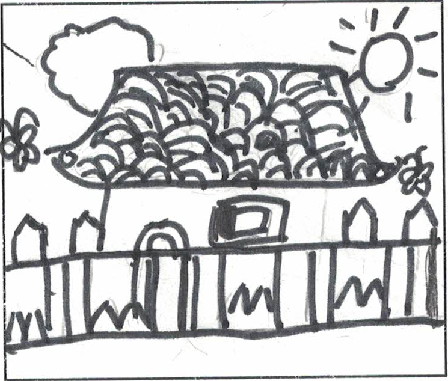
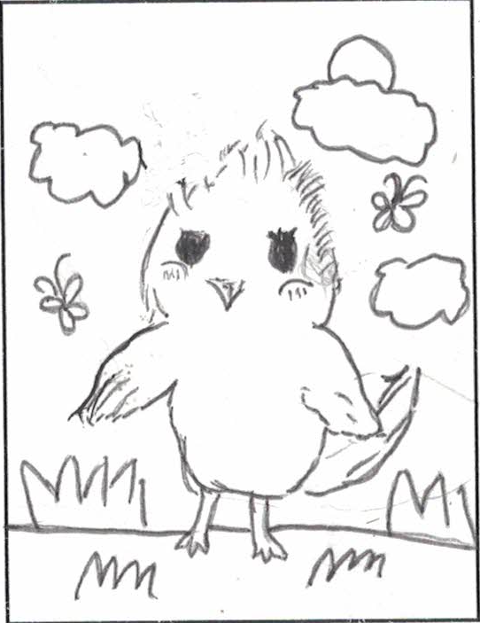

有一年夏天，我们回到了奶奶家。一进院门，我的注意力就集中在了小鸡的身上。以前，我们只是在冬天才回奶奶家，所以，我对这些小鸡很是新奇。
奶奶家的小鸡浑身长满了黄色的绒毛，可可爱爱的，这些小鸡正在用它们那灵活的小脚，满院子跑呢。这些脚，如果不仔细看的话，还真的看不出来。小鸡们的翅膀时不时地扇动一下，可能是让伙伴注意一下自己在这里。这些满院子跑的小鸡们，如果发现了一些它们认为可吃的东西，就会用它们那尖尖的，红红的小嘴啄一下，如果好吃，它们就会用嘴夹住吃的，然后吃进肚子里。
这些小鸡，如果看见我们这些“陌生人”在向它们接近，就会立刻跑到母鸡的身边，聚在一起，想让母亲来保护它们。
我继续接近小鸡，小鸡们更紧张了。最后，我离母鸡只有不到一米的距离了，但是我不敢靠的更近，因为我怕母鸡啄我。我们可以明显的看到，这只母鸡有很多很多小鸡，母鸡的翅下的空间太小了，于是其它的小鸡就踩在它们脚下的小鸡的上面，就这样，这些小鸡挤在一起，已经有母鸡高了。
这就是奶奶家的小鸡，它们非常的可爱，不过，现在奶奶家的院子里，已经没有鸡了，因为奶奶不养鸡了。